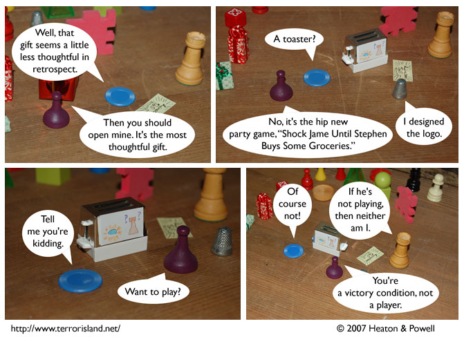

Strip #153
— Monday, June 4, 2007
Jame isn’t a player either, he’s technically just a gamepiece
Notes, Thoughts, &c.
Ben’s Notes
Seems like neither Sid nor Stephen did a very good job of picking out a gift for Jame. I wonder what’s going to happen next.
Hey, Lewis, did anybody solve that riddle from your comments a couple days ago? I haven’t been trying to work it out, since I’m not eligible for the prize anyway.
Lewis’s Notes
Ben, I don’t know if anyone solved it, but no one has attempted to claim the 10 points.
So today, I will offer an easier challenge. Five points to anyone who explains the whereabouts of any absent cast member. Guesses should be made in the forums.
Points will be awarded on a first-come first-serve basis, so get your guesses in early.